Revamp Your Fleet’s Bus Driver Training Program for Both Your Drivers and Passengers. Whether your fleet is in the process of recovering from recent accidents, or just taking extra steps to prevent future incidents, an investment in safety is a positive move for your organization. Notable for both clarity of content and yielding fast learning, … Continue reading “Bus Driver Training Program | TAPTCO Transit & Paratransit Company”

Mobile Yard Ramp For Sale From Copperloy by JH Industries A Copperloy mobile yard ramp allows not only for the same ground level access as a fixed installation, but also for your team to move from job to job more efficiently. To list, here are some of the advantages of a Copperloy mobile yard ramp. … Continue reading “Mobile Yard Ramp For Sale | Copperloy by JH Industries”

School Bus Driver Training Materials From School Bus Safety Company It’s easy to discount how much trust parents have in school transportation professionals; above all, School Bus Safety Company approaches safety procedures from both multiple angles, and multiple disciplines. Significantly, the organization has brought industrial psychology, media production, and instructional design together to create truly … Continue reading “School Bus Driver Training | School Bus Safety Company”
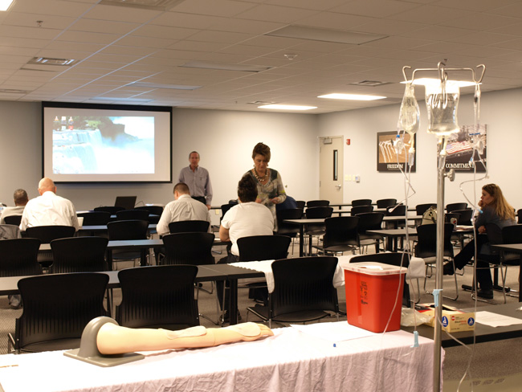
BLS Certification Near Me From Premier Health & Safety Academy We all know choking and cardiac emergencies, for example, require bystanders to take action, but would you have the knowledge to act quickly and save a life if you were to see someone in danger? For this reason, the American Heart Association’s (AHA) Basic Life … Continue reading “BLS Certification Near Me | Premier Health & Safety Academy”
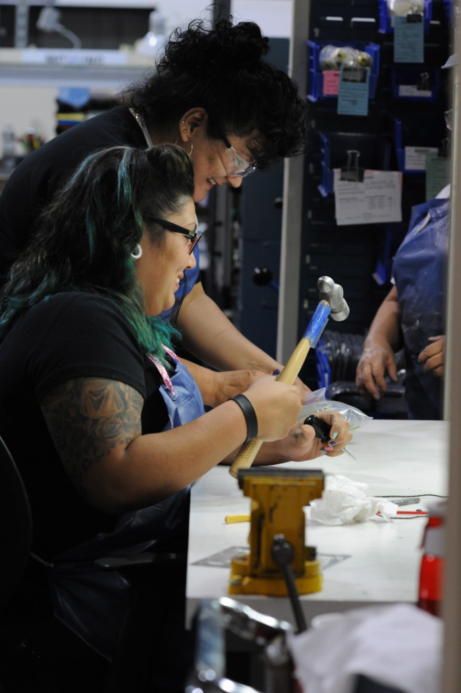
Aerospace Parts Manufacturing Companies and organizations in search of aerospace parts manufacturing can rely on NMG Aerospace. NMG is a leader in aerospace parts manufacturing in Northeast Ohio and also a notable distributor of defense and aviation products on an international level. Customers of NMG receive unmatched product quality and speedy shipment. NMG is distinguishable … Continue reading “Aerospace Parts Manufacturing | NMG Aerospace”

Divorce Lawyer | Cameron B. Pedro Attorney at Law Though a divorce may be what is best for a couple, no one ever enjoys the process. For this reason, Cameron B. Pedro takes ownership of his role as a divorce lawyer; he recognizes the struggle of his clients and makes every effort to lead as … Continue reading “Divorce Lawyer | Cameron B. Pedro”
ACLS Certification Ohio From Premier Health & Safety Academy Ideal for healthcare professionals, the American Heart Association’s Advanced Cardiovascular Life Support (ACLS) training course both expands upon Basic Life Support (BLS) protocol and emphasizes impactful cardiopulmonary resuscitation (CPR.) This comprehensive training course addresses effective communication in a cardiac emergency, relevant pharmacology, and recognition and early … Continue reading “ACLS Certification Ohio | Premier Health & Safety Academy”
PALS Classes Near Me From Premier Health & Safety Academy | Pediatric Advanced Life Support Without a doubt, whether you’re a young babysitter or a veteran day care administrator, new to the responsibility or an old pro, a lack of preparation for an emergency can be dangerous, even fatal. For this reason, the American Heart … Continue reading “PALS Classes Near Me | Premier Health and Safety Academy”

Tool Box Drawer Liner | Zerust Consumer Products | Protecting Your Precious Metals Zerust’s exclusive tool box drawer liner not only protexts your tools from damage from hard surfaces, but also against rust and corrosion. The product is ideal for shelves, tool boxes, drawers, truck boxes, and storage boxes, for example. Significantly, Zerust’s exclusive tool … Continue reading “Tool Box Drawer Liner | Zerust”

Warehouse Dock Ramps From Copperloy by JH Industries | Ramp Up Your Production. Does your facility need a permanent material handling solution? If so, then go with a dock to ground ramp. This option moves freight from grade level to dock height with a fixed installation. However, if your workplace would benefit from a mobile … Continue reading “Warehouse Dock Ramps | Copperloy by JH Industries”

Aerospace Machine Shop NMG Aerospace has been the premier aerospace machine shop not only for Northeast Ohio’s aerospace industry, but also leads the way in the distribution of products for aviation and defense around the world. This Stow, OH business may have Northeast Ohio roots, however it serves customers around the world. NMG Aerospace has … Continue reading “Aerospace Machine Shop | NMG Aerospace”

Conduit Hangers | Progressive Machine Die | Conduit Hardware Conduit Hangers From Progressive Machine Die | Easy Access to Quality Products Progressive Machine Die Conduit Hangers With Both Carriage Bolt and Nut Steel-based Feature zinc-plated finish Available in trade sizes 0 through 9 Conduit Hangers With Formed Thread Secure with screws with no nuts necessary … Continue reading “Conduit Hangers | Progressive Machine Die”
BLS Classes Near Me | Premier Health and Safety Academy | PHSA Basic Life Support | BLS Classes Near Me From Premier Health and Safety Academy | A Commitment to Education and Service No one expects cardiac emergencies to occur, however a lack of readiness to react impactfully to these events is dangerous. Though it … Continue reading “BLS Classes Near Me | Premier Health and Safety Academy”

Panel Insulation | Jaco Products | Quality Custom Plastic Machining Services Panel Insulation Solutions From Jaco Products | For Any Industry and For Any Application The Jaco Products team fits and fabricates every panel to the customer’s specifications in the most cost-effective way possible. In fact, the exclusive thermal insulators from Jaco Products make for … Continue reading “Panel Insulation |Jaco Products”
School Bus Driver Training Classes | School Bus Safety Company School Bus Driver Training Classes From School Bus Safety Company Overall, the curriculum for school bus driver training classes from School Bus Safety Company takes a comprehensive and multidisciplinary approach. For example, the materials draw from psychology and multimedia development to construct effective and engaging … Continue reading “School Bus Driver Training Classes | the School Bus Safety Company”
Lawn Care Near Me | Marathon Grounds Care Lawn Care Near Me From Marathon Grounds Care Time Teaming up with experts for lawn care near me saves you valuable time. If you already have a full-time job and people depending on you, taking on a major home improvement project can take too much out of … Continue reading “Lawn Care Near Me | Marathon Grounds Care”
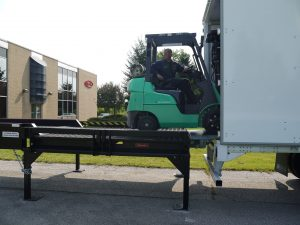
Mobile Loading Dock | Copperloy by JH Industries | Ramp Up Your Production. Mobile Loading Dock From Copperloy by JH Industries: Saving Space and Maximizing Safety Copperloy’s exclusive mobile loading dock selection includes options that both save valuable space in your facility and maximize safety. Significantly, these docks allow tractor trailers to transport shipments directly. … Continue reading “Mobile Loading Dock”
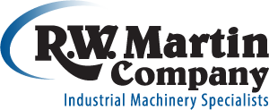
Sell Commercial Equipment | R.W. Martin Company Industrial Machinery Specialists Improve Your Facility; Sell Commercial Equipment With R.W. Martin Company R.W. Martin Company offers great machinery purchase and consignment options to let you and your colleagues move forward with your plans for your facility. Partner up with R.W. Martin Company to sell commercial equipment and … Continue reading “Sell Commercial Equipment | R.W. Martin Company Industrial Machinery Specialists”
Aerospace Components Manufactures Aerospace components manufactures, what it means and what they do? As an Aerospace components manufactures, basically it’s a company that is in one way or another involved with the various aspects of the design, build, test, sell, and maintaining of vehicle, machine, aircraft and parts, missiles, rockets, and spacecraft. Now with that explained, … Continue reading “NMG | Aerospace Components Manufactures | Continuous Improvement”
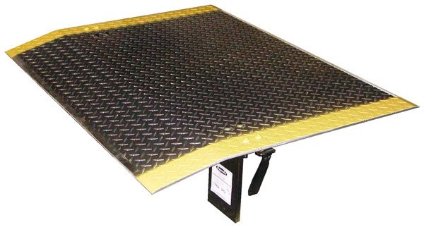
Dock Plates | Copperloy by JH Industries | Ramp Up Your Production. Dock Plates From Copperloy by JH Industries Loading dock plates connect one area in a material handling space to another. Dock plates lack curbs and are ideal for pallet jacks and dollies. A dock plate is a flat piece of metal with a … Continue reading “Loading Dock Plate | Copperloy by JH Industries”
Commercial Laundry Equipment Repair | The R.W. Martin Company Industrial Machinery Specialists Investing in Your Facility: Commercial Laundry Equipment Repair From the R.W. Martin Company Without a doubt, for your facility to produce the revenue you need, your space must operate at maximum efficiency. This is impossible if your commercial laundry equipment is not working … Continue reading “Industrial Laundry Parts | R.W. Martin Company Industrial Machinery Specialists”
Industrial Laundry Parts | R.W. Martin Company: Industrial Machinery Specialists If You Decide Not to Invest in Your Facility Now, Then You’ll Regret it Later: Industrial Laundry Parts From R.W. Martin Company Without a doubt, industrial laundry parts are everywhere; from brick-and mortar distributors, to online storefronts, such pieces are easy to obtain. However, industrial … Continue reading “Industrial Laundry Parts | R.W. Martin Company Industrial Machinery Specialists”
Bus Driver Training Course | TAPTCO | Transit & Paratransit Company Bus Driver Training Course From TAPTCO Transit & Paratransit Company: An Effective and Multidisciplinary Approach to Safety Training Transit Operator Development Course Paratransit Operator Development Course The Safety Leadership Course Trainer Certification Process Bus Garage Safety Toolkit and OSHA Compliance Conflict and Aggression Management … Continue reading “Bus Driver Training Course | TAPTCO Transit & Paratransit Company”
Bluff Manufacturing | Copperloy by JH Industries | Ramp Up Your Production. The Premier Alternative to Bluff Manufacturing: Why Choose Copperloy by JH Industries? First and foremost, a single-acting hydraulic system is the main component of the Copperloy advantage. In fact, competing ramps such as those from Bluff Manufacturing operate with less efficient hydraulic systems … Continue reading “Ramp for Loading Dock | Copperloy by JH Industries”
Drive Up Ramp | Copperloy by JH Industries | Ramp Up Your Production. Drive Up Ramp From Copperloy by JH Industries: Maximizing Safety, Space, and Profitability in the Workplace A Copperloy drive up ramp allows trucks, forklifts and other vehicles access to higher areas in a work facility. Copperloy by JH Industries offers two drive … Continue reading “Drive Up Ramps | Copperloy | Dock Equipment | Safe & Reliable”
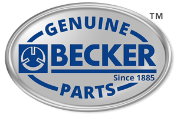
Busch Pump | Busch Pumps | Becker Pumps Corporation About Becker Pumps Corporation: Investing in Your Facility Above all, Becker Pumps Corporation puts the focus on constant enhancement of air moving technology. The company offers exclusive customization services in addition to technical support and an impressive replacement part selection. For this reason, Becker’s industrial vacuum … Continue reading “Busch Pumps | Becker Pumps Corporation”
Loading Dock Ramps | Copperloy by JH Industries | Ramp up Your Production. Copperloy’s Loading Dock Ramps: Maximizing Space, Safety, and Productivity Loading dock ramps from Copperloy by JH Industries feature an exclusive single cylinder structure. Significantly, this unique design uses significantly less pressure than competitors’ models. Most importantly, Copperloy’s loading dock ramps provide easier … Continue reading “Loading Dock Ramps | Copperloy by JH Industries”

Sealing Criminal Records In Ohio | Second Chance | Davis Law Group Searching for Sealing Criminal Records In Ohio? Davis Law Group, Attorneys at Law is here to help you gain your second chance. Do you have an arrest, charge, or convicted of a crime? If you answered yes, then you know that your past … Continue reading “Sealing Criminal Records In Ohio | Davis Law Group | Attorneys At Law”
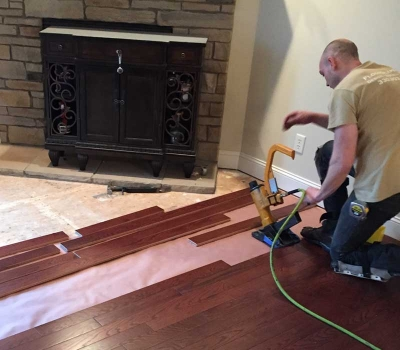
Flooring Installation Companies | Flooring Installation Companies Near Me | Floorscapes Installation Specialists About Floorscapes Installation Specialists: A Dedication to Quality and Community Above all, Floorscapes Installation Specialists is notable for its dedicated team of contractors who commit themselves to providing quality home improvement. The Stow, Ohio-based company offers customized flooring solutions for the Northeast … Continue reading “Flooring Installation Companies | Flooring Installation Companies Near Me | Floorscapes”

Glastherm | Monoco Inc. | Glastherm Distributor About Monoco Inc.: A Dependable Glastherm Distributor Since 1965, Monoco, Inc. has provided premier electrical and thermal insulation materials for an impressive range of fields and industrial applications. A reliable Glastherm distributor, the company has led the way in both the distribution and the fabrication of industrial laminates … Continue reading “Glastherm”

Dock Boards | Copperloy by JH Industries | Ramp Up Your Production. About Copperloy by JH Industries: Leading Material Handling Equipment Manufacturers For more than five decades, Copperloy by JH Industries has been a premier source for quality industrial equipment. In fact, Copperloy by JH Industries leads the way among manufacturers of material handling and … Continue reading “Dock Boards | Copperloy by JH Industries”
Bus Driver Training Program | TAPTCO | Transit & Paratransit Company About TAPTCO Transit & Paratransit Company: Detailed and Engaging Bus Driver Training Program Materials For more than two decades, TAPTCO Transit & Paratransit Company has formatted top quality bus driver training program materials. Above all, TAPTCO Transit & Paratransit prioritizes safety. The Hudson, Ohio-based … Continue reading “Bus Driver Training Program | TAPTCO Transit & Paratransit Company”
School Bus Driver Training | the School Bus Safety Company About the School Bus Safety Company For more than two decades, the School Bus Safety Company has produced video and print materials for school bus driver training. The company’s exclusive materials allow for education plan customization as well as encourage collaboration between drivers and students … Continue reading “School Bus Driver Training | the School Bus Safety Company”
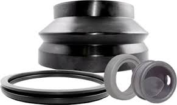
Injection Molding Companies | Qualiform Custom Rubber Molding About Qualiform Custom Rubber Molding: A Leader Among Injection Molding Companies For more than four decades, Qualiform Custom Rubber Molding has led the way as other injection molding companies have emerged. Above all, Qualiform prioritizes competitive prices, short runs, and fast turnarounds. Businesses across the country rely … Continue reading “Injection Molding Companies | Qualiform Custom Rubber Molding”
Applications Of Rubber Gaskets Rubber gaskets are applied in a wide variety of applications with a diverse range within the industrial world of today. Gaskets provide a seal between two objects that do not nest together tightly. This will create a seal preventing any leakage of moisture, air, gas, and liquids. This helps in maintaining … Continue reading “Applications of Rubber Gaskets | Rubber Seal Products | Qualiform, LLC”
Plastic Fabrication Company | Plastic Fabricator | Plastic Fabrication | Jaco Products About Jaco Products: Quality Plastic Fabrication Services Jaco Products has more than eight decades of expertise as a plastic fabrication company. Chiefly, plastic machining, stamping, and injection molding, and more make up the company’s diverse range of offerings. Above all, Jaco Products takes … Continue reading “Plastic Fabrication Company | Plastic Fabricator | Plastic Fabrication | Jaco Products”
Ramp For Loading Dock | Copperloy by JH Industries About Copperloy by JH Industries: Leaders of an Industry Copperloy by JH Industries serves clients by providing the highest quality material handling and loading dock equipment. Their Twinsburg, Ohio facility uses the most current computer numerical control (CNC) and robotic technology to produce ramp for loading … Continue reading “Ramp for Loading Dock | Copperloy by JH Industries”
BLS Certification Cleveland Ohio | BLS Certification Near Me | ACLS BLS Certification If you are searching for BLS certification near me or BLS certification Cleveland Ohio, make sure to check out Donald Martens & sons education calendar. BLS is abbreviated for Basic Life Support. Donald Martens & Sons Ambulance Service provides instructor-led courses. These … Continue reading “BLS Certification Near Me | Martens Ambulance | Cleveland Ohio”
Tenant Lawyer | Davis Law Group: Putting the Focus on Family Throughout the Legal Process About Davis Law Group: A Crucial Resource for the Northeast Ohio Region With nearly four decades of advocacy and dedication behind them, Davis Law LLC has emerged as a leading resource for a tenant lawyer in Northeast Ohio. Above all, … Continue reading “Tenant Lawyer | Davis Law Group”
Loading Dock Plate | Copperloy by JH Industries About Copperloy by JH Industries: Leading the Material Handling and Loading Dock Equipment Fields Copperloy by JH Industries stands out among the rest when it comes to manufacturing durable equipment for numerous material handling purposes. The Twinsburg, Ohio headquarters is a one-stop source for premier design and … Continue reading “Loading Dock Plate | Copperloy by JH Industries”

Cargo Ramps | Copperloy by JH Industries About Copperloy by JH Industries: More Than Fifty Years of Industry Leadership For more than five decades, Copperloy has produced quality loading dock and material handling equipment. Their Twinsburg, Ohio facility supplies American-made edge of dock levelers, portable loading docks, and cargo ramps, for instance. Chiefly, Copperloy employs … Continue reading “Cargo Ramps | Copperloy by JH Industries”
Rubber Gaskets Fit & Function So what exactly are rubber gaskets and its function? Gaskets are a fundamental part of our everyday life which typically are overlooked and underappreciated. Being used in just about all household appliances, vehicles, and other types of machines. Think about it, what is one appliance that everyone uses day in … Continue reading “Rubber Gaskets | Rubber Seal Products | Qualiform, LLC”

Wine Country | Wine Country Ohio | Wine Country in Ohio | Wine Country Tours | M Cellars About M Cellars: World Class Winemaking Right Here in Northeast Ohio Matt and Tara Meineke commit themselves to provide an amazing experience for the people of Ohio and beyond. Above all, M Cellars produces authentic, … Continue reading “Wine Country | Wine Country Ohio | Wine Country in Ohio | Wine Country Tours | M Cellars”

Aluminum Loading Ramps | Copperloy by JH Industries About Copperloy by JH Industries: Leaders in the Material Handling and Loading Dock Equipment Industries This Twinsburg, Ohio-based company produces durable products such as aluminum loading ramps for businesses across the country and across countless fields. As a result, Copperloy has stood out for over … Continue reading “Aluminum Loading Ramps | Copperloy”
Bus Driver Training – Proper Training Is Fundamental When searching for bus driver training courses, be sure to put School Bus Safety Company at the top of your list. When considering obtaining a commercial driver’s license, proper training is fundamentally when it comes to keeping kids safe. SBSC offers the most comprehensive bus driver training … Continue reading “Bus Driver Training | Keeping Children Safe | School Bus Safety Company”
Summit County Probate | Davis Law Group LLC About Davis Law Group LLC: A Leader in Their Field and in Their Community Father and son Kevin G. Davis and Kevin G. Davis II lead Davis Law Group and lead their field as premier Summit County probate lawyers. Above all else, Davis Law Group … Continue reading “Summit County Probate | Davis Law Group”

Dock Levelers | Copperloy by JH Industries About Copperloy by JH Industries Copperloy by JH Industries has dedicated more than half a century to producing material handling and loading dock equipment of the highest quality. The company has garnered credibility across the nation and across industries. Copperloy has provided durable products for numerous … Continue reading “Dock Levelers | Copperloy”
Dock Plate | Copperloy by JH Industries About Copperloy by JH Industries Copperloy by JH Industries is a premier manufacturer of material handling and loading dock equipment. The Twinsburg, Ohio facility produces dock plate, wheel chocks, edge of dock levelers, heavy duty yard ramps, and so much more. All departments collaborate with each … Continue reading “Dock Plate | Copperloy by JH Industries”
Dock Boards Solutions For Difficult Challenges Do you know Copperloy dock boards can be customized matching any of your specifications, offering solutions for any difficult challenges? With the productivity of your warehouse loading operations solely relying on the quality of the equipment involved, why would you settle for anything less than the best? Does your … Continue reading “Dock Boards | High Strength | Durable | Portable | Copperloy”
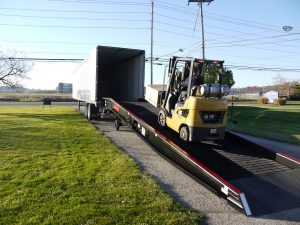
Semi Truck Ramp | Tractor Trailer Ramps | Copperloy by JH Industries About Copperloy by JH Industries Copperloy serves as a leader in the material handling and loading dock equipment industries. The company produces quality specialty ramps, portable loading docks, edge of dock levelers, tractor trailer ramps, and so much more. Based in Twinsburg, Ohio, … Continue reading “Semi Truck Ramp | Tractor Trailer Ramps | Copperloy by JH Industries”
Aluminum Ramps | Copperloy/JH Industries About Copperloy/JH Industries: A Commitment to Quality Businesses in Northeast Ohio and beyond count on Copperloy for quality aluminum ramps, lifts, edge of dock boards, and more. For this reason, in the material handling and loading dock equipment industries Copperloy stands out among the rest. Copperloy distinguishes itself through … Continue reading “Aluminum Ramps | Copperloy”
Divorce Lawyer Medina | Cameron B. Pedro | Cameron B. Pedro Attorney at Law About Cameron B. Pedro: An Empathetic, Dedicated, and Trustworthy Divorce Lawyer Medina Cameron B. Pedro has provided premier legal services across multiple disciplines. He is a leader of his profession in the region as a premier resource for divorce … Continue reading “Divorce Lawyer Medina | Cameron B. Pedro”
Copperloy/JH Industries | Used Yard Ramps About Copperloy/JH Industries: Leading the Material Handling and Loading Dock Equipment Fields Businesses expect safety, reliability, and efficiency from products when investing in material handling equipment. Copperloy leads the loading dock equipment industry and provides cost-effective material handling solutions. Their Twinsburg, Ohio facility uses the latest in … Continue reading “Used Yard Ramps | Copperloy/JH Industries”
Best Garage Storage Shelves | Overhead Garage Storage If you’re searching for the best garage storage shelves solutions you have come to the right place. With Ohio Garage Interiors overhead garage storage makes your garage more functional. Think about it, you all have this valuable space above in your garage why not put it to use. … Continue reading “”

Copperloy/JH Industries | Steel Yard Ramps | Steel Trailer Ramps About Copperloy/JH Industries: Quality Steel Yard Ramps and Steel Trailer Ramps for Any Industry Copperloy is a premier resource for customized design of material handling products. Count on Copperloy to deliver quality steel yard ramps, steel trailer ramps and more. The company serves an impressive … Continue reading “Copperloy | Steel Yard Ramps | Steel Trailer Ramps”
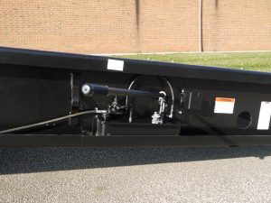
Copperloy/JH Industries | Heavy Duty Ramps | Loading Ramps Heavy Duty | Heavy Duty Truck Service Ramps About Copperloy/JH Industries: Leading the Material Handling Equipment Industry Copperloy is a leader in the material handling equipment industry. Headquartered in Twinsburg, Ohio, Copperloy has become a premier source of heavy duty truck service ramps and other heavy … Continue reading “Copperloy/JH Industries | Heavy Duty Ramps | Loading Ramps Heavy Duty | Heavy Duty Truck Service Ramps “
EMT Basic Training The First Step Of The EMT- Paramedic Field Donald Martens and Sons is now offering EMT basic training. So what exactly does EMT basic training implicate? EMT I- Basic certification is the beginning of career towards becoming a certified EMT- Paramedic. Most EMT Paramedic programs are 2-year associates degree. EMT- Basic certification … Continue reading “EMT Basic Training | Martens Ambulance | Cleveland Ohio”
Yard Ramp Safety | Truck Loading Safety | Copperloy/JH Industries About Copperloy/ JH Industries Copperloy/JH Industries is one of the nation’s leading manufacturers of loading dock products. The Twinsburg-based company provides quality material handling equipment all over the country. They take advantage of the latest in manufacturing technology and make safety a priority. This is … Continue reading “Yard Ramp Safety | Truck Loading Safety | Copperloy/JH Industries”
M Cellars | Wine Tasting | Wine Tasting Near Me | Wine Tasting Tours | Wine Tasting Room About M Cellars: World-Class Quality at Home Matt and Tara Meineke take pride in the dedication and attention to detail that make M Cellars Northeast Ohio’s destination for quality wine. The winery is notable for its selection … Continue reading “M Cellars | Wine Tasting | Wine Tasting Near Me | Wine Tasting Tours | Wine Tasting Room”
Hydraulic Ramp | Why Choose Copperloy? If your industries hydraulic ramp is unreliable and unsafe, it can be a significant problem for a loading dock operation. When your employees are going to be loading/unloading all day, the ramps also need to be able to handle the workload. If not there’s a big safety issue at … Continue reading “Hydraulic Ramp | Benefits & Features | Copperloy”
JH Industries Inc. | Portable Loading Docks | Copperloy About Copperloy/JH Industries: Quality Results For Efficient Workplaces Copperloy/JH Industries is one of the nation’s leading manufacturers of loading dock products. This Northeast Ohio manufacturer has its roots in Twinsburg but its reach across the country. They produce quality products through the latest in computer numerical … Continue reading “JH Industries Inc. | Portable Loading Docks | Copperloy”

Overhead Garage Storage The Best Storage Solutions Overhead Garage Storage is the ideal storage solutions to make your garage space more functional. Think about it, you all have this valuable space above in your garage why not put it to use. It’s time to take back your garage. Overhead storage systems are perfect for keeping … Continue reading “Overhead Garage Storage | Ideal Storage Solutions”

Manufacturing Metal Truck Ramps That Simplify Loading Tasks Copperloy has the metal truck ramps that you need to simplify any possible loading task. Sixty years of experience creating dock equipment, speaks for itself. Coppereloy is the leading manufacturer of all your loading and unloading needs. With in house engineering and technical sales department, they will … Continue reading “Metal Truck Ramps | Copperloy | Simplify Loading Tasks”
Floor Installers To Elevate Your Home Are you searching for floor installers in the Stow – Hudson area? You can rely on Floorscapes Inc. Installation Specialists for the best experience with floor installers. Flooring can bring an entirely new look and feel and will elevate your home and style. Taking pride in every project they … Continue reading “Floor Installers | Floorscapes Inc. | Hudson, Ohio | Installation Specialists”
Finding The Right Drive Up Ramps For Your Needs. Copperloy has heavy-duty drive up ramps that can handle all your loading and unloading needs. They are the leading custom steel fabrication manufactures in the industry. With 60 year’s experience, they apply loading solutions for everyday tasks to any customers operations. Drive up ramps provide vehicles … Continue reading “Drive Up Ramps | Copperloy | Dock Equipment | Safe & Reliable”

Portable Dock Ramp | Loading/Unloading | Copperloy If your company receives freight shipments, a portable dock ramp is a must. Portable dock ramps move loads from trucks to ground level or from ground level to docks and vice versa. Offering solutions for all business need big and small. For example, if your business loading/unloading needs … Continue reading “Copperloy | Portable Dock Ramp | Three Simple Choices”
Molding The Impossible | PPS Injection Molding PPS injection molding is a challenge that Jaco Products will make possible for you. Jaco has proudly built its reputation as the #1 plastic machine shop in the US providing unparalleled service, quality, and pricing. Since 1948 they have continued to progress and expand their expertise in precision … Continue reading “PPS Injection Molding | Custom Plastic Machining | Jaco Products”

Network Services That Your Business is Craving When searching through options for Network Services in Naples, Florida, depending on QualityIP is easy. They are a leading IT company composed of technical experts. Partnering up provides your business with a reliable resource and guidance for all your network services need. QualityIP employs technicians that are hardworking … Continue reading “Network Services | QualityIP | Naples, Florida | Technical Experts”
What to expect from IT Consultant Naples, FL. When searching for IT Consultant Naples look no further than QualityIP Naples, FL. QualityIP is a leading IT consulting company in Southwest Florida and they know technology. In today’s business world hiring a dependable IT consultant is a must have for the security of your business. … Continue reading “IT Consultant Naples | QualityIP | What to Expect | Unparalleled Results”

QualityIP | Managed IT Services | Naples, FL. If you’re searching for Managed IT Services, the answer without a doubt is QualityIP. Managed IT Services you can trust. With experienced technicians, Microsoft certified resources, security specialist, cloud experts you will see exceptional results. Additionally, the extensive knowledge of our experts combined provides businesses with … Continue reading “Managed IT Services | Naples FL. | QualityIP”

It Support in Naples, Florida Every business owner should invest in IT Support. Living in a society where technology permeates every aspect of everyday life, your business needs to be protected. Building a profit and a solid customer base is hard enough for most small business. Furthermore, QualityIP is capable of not only protecting your … Continue reading “IT Support Naples, Florida | QualityIP | Protecting Your Business”
Truck Loading Ramps | The Right Solution Copperloy truck loading ramps are the right solution for all your loading and unloading job needs. Offering two diverse product styles; the ground- to- truck loading ramps and twin lock ramps, also known as split ramps. With safety being Copperloy’s leading priority they also have your facility production … Continue reading “Truck Loading Ramps | Copperloy | The Right Solution”
Custom Plastic Machining That Meets Your Needs Looking for a custom plastic manufacturing Company. Needing a specific part designed and not sure where to start? Jaco Products will provide all of these. With 60 years of experience, Jaco Products has earned a reputation as a leading custom plastic machine company in Ohio. Being superior … Continue reading “Custom Plastic Machining | Jaco Products | Solutions You Can Count On”
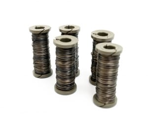
Snare Trap Wire | Small Game | High-Quality If you’re a hunter/Trapper looking for a high-quality snare trap wire Malin Co. has what you’re looking for. Sine 1884, Malin Co has earned a reputation for reliability and success with its snare trap wire. Thus being the ultimate tool for all outdoor survivalist of all … Continue reading “Snare Trap Wire |Top Quality Snare Wire | Malin Co.”
Semi-Truck Ramps | America’s Ultimate Ramp | Copperloy Copperloy’s Semi-Truck Ramps are engineered with industrial use in mind. They need to be capable of handling the workload day in and out, if unstable and unreliable this could be detrimental to employees and the efficiency of your facility. Copperloy’s Semi-Truck Ramps also know as Tractor-Trailer Ramps, … Continue reading “Semi-Truck Ramps | Tractor-Trailer Ramps | Semi-Trailer Ramps”

Copperloy Is The Solution To Your Portable Loading Dock Needs If your facility doesn’t have a loading dock or you have limited space; Copperloy offers a line of portable loading docks for your needs. Helping you to avoid the inconvenience of construction, as well as being a cost-effective solution with the investment of these portable … Continue reading “Portable Loading Docks | Copperloy | Portable Loading Dock”

Rent a Loading Ramp | Loading Ramp Rentals | Copperloy With Copperloy loading ramp rentals, this can be your answer for a cost effective short term solution for all your loading dock operation dilemmas. Copperloy has a complete lineup of factory certified loading ramps that offer all the same advantages as the rest of the … Continue reading “Rent a Loading Ramp | Loading Ramp Rentals | Copperloy”

Affordable Family Clinic | Where Care And Community Meet | AxessPointe AxessPointe gets the pointe that not all are covered equally and their goal is to maintain an Affordable Family Clinic where all can be “treated” equally. Their focus is simple; the uninsured, underinsured and Medicaid/Medicare patients have access to an affordable family clinic for … Continue reading “Affordable Family Clinic | AxessPointe | What’s The Pointe?”
Used Yard Ramps Did you know that Copperloy offers a range an of used yard ramps? When an investment for brand new equipment just isn’t applicable for your business or facility Copperloy can help keep costs down with their used yard ramps. With a range of ramps available, sizes, specifications, and weight capacities there’s sure … Continue reading “Used Yard Ramps | Copperloy | Great Quality | Fraction Of The Price”
Heavy Loads | Copperloy | Big Steel Ramps When it comes to heavy loads Copperloy is here to help with their big steel ramps. These are by far the strongest in the industry and can handle the biggest loads. Yard ramps solve the issues of not having a dock or for when access is burdensome. … Continue reading “Big Steel Ramps | Copperloy | Heavy Loads”

Why choose Delrin Machining Why choose Delrin Machining and what it is? Machined Delrin, sometimes called acetal, provides a variety of benefits. Thus producing a quality product that is tough to wear out. It is easy to machine and fabricates with low, consistent internal stress. Jaco is highly experienced in working with Delrin plastic and … Continue reading “Machined Delrin | Benefits of Delrin | Delrin Machining”
Ohio Plastic Manufacturing Company Looking for an Ohio plastic manufacturing Company. Need someone who can get your job accomplished quickly, yet accurately and at a fair price? Jaco Products will provide all of these. Jaco Products has earned a reputation as one of the leading plastic machine company of Ohio. Due to their total dedication … Continue reading “Jaco Products | Ohio Plastic Manufacturing Company”
Now that’s top Quality QualityIP is a Southwest Florida IT Company that works to ward off any technology issues. Having a lot of time and effort into starting your business, now think long term care of keeping things running smoothly. QualityIP has the resources and skills to prevent and repair technology issues and ensure that … Continue reading “QualityIP”

Garage Interior Remodeling|Is your Garage a disaster in the making? If you find yourself afraid to move around freely within your garage space for fear of something falling over and possibly injuring yourself and or your new car then it might just be time to invest in a Garage Rack System. Transforming your garage … Continue reading “Garage Interior Remodeling | Ohio Garage Interiors”

Great Beginnings Pediatric Dentistry | Children’s Dentist Near Me If you are searching “Children’s Dentist Near Me,” you will find everything you need with Great Beginnings Pediatric Dentistry. GBPD specializes in making the dentist’s office experience as comfortable as possible for all children. Creating a welcoming and comfortable environment is an ever-present goal for the … Continue reading “Children’s Dentist Near Me”

Exterminator Pittsburgh PA | Expert Pest Expert Pest Management, Exterminator Pittsburgh PA, is the best solution for virtually all infestation issues. If you have hired pest control companies and have not received the results you deserve, Expert Pest can help. They specialize in the eradication of insects, rodents, and many forms of wildlife. Expert Pest … Continue reading “Exterminator Pittsburgh PA”

Legal Transcription Companies in USA | E-Typist Both independent attorneys and established law firms can both benefit from the services of legal transcription companies in USA. Contact E-typist if your practice is in need of transcription services. They can provide transcriptions for any of your documents at an extremely efficient rate and reliable quality. E-Typist staff … Continue reading “Legal Transcription Companies in USA”

Legal Transcription Services | E-Typist Law firms and private attorneys in need of legal transcription services should contact E-Typist. They can provide clear and accurate transcriptions reliably with incredibly quick turnaround. The E-Typist staff is highly experienced in transcribing reports, interviews, investigations and pleadings, and more. E-Typist offers a wide selection of services at an … Continue reading “Legal Transcription”

Dry Vacuum Pump | Becker Pumps A facility’s central air system has a significant impact on the facility’s energy consumption as well as; therefore, installing reliable machinery is crucial for efficiency and profitability. Many facilities have machinery that produces excessive noise, suggesting high levels of productivity; however, many of these machines are less efficient than … Continue reading “Dry Vacuum Pump”
Plastic Part Designer | Blue-Reed, LLC The processes of plastic product design – rotational molding, blow molding, injection molding, etc. – all have guidelines necessary for creating high-quality plastic parts. If you are looking for a plastic part designer, Greg Stout and Blue-Reed LLC can get you exactly what you need every time; furthermore, Greg … Continue reading “Plastic Part Designer”

QualityIP Phone Systems If you are looking for an update to your business’s phone systems, QualityIP offers both phone systems and IT services. By using advanced technology and collaboration tools, phone systems are more versatile and cost-efficient than ever. Furthermore, QualityIP offers solutions for a multitude of unique situations. Whether you’re looking for mobile integration, … Continue reading “Phone Systems”

Becker Pumps Central Air Machinery| Vacuum Pump Vanes The efficiency of a centralized air system has a direct influence on the power consumption of any facility. Unfortunately, many facilities have central air machinery that is incredibly noisy and completely inefficient, wasting power and increasing overall costs; however, Becker offers a variety of high-efficiency machinery that … Continue reading “Vacuum Pump Vanes”

Used Grove Cranes | Tom Kasner Crane Sales Inc. If you are looking to buy or sell used cranes, Tom Kasner Crane Sales Inc. has a collection of professional resources for both buyers and sellers alike. There are buyers and sellers for nearly any model of crane. Used grove cranes, tower cranes, and all-terrain cranes … Continue reading “Used Grove Cranes”
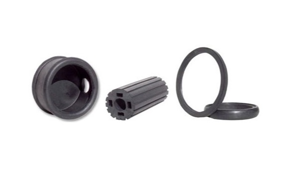
Qualiform Custom Rubber Products | Rubber Molder Ohio If you are looking for a rubber molder in Ohio, Qualiform Inc. is the best option for manufacturing custom rubber products. Qualiform offers reliable, high-quality products, and they also provide unparalleled customer service. They have extensive experience in many types of custom rubber molding, relative to other … Continue reading “Rubber Molder Ohio”

Ohio Garage Interiors | Garage Floor Epoxy When deciding on your garage floor coating, you need a combination of both aesthetic and durability. If you are struggling to find a selection that works for you, Ohio Garage Interiors will have exactly what you need. Ohio Garage Interiors can give your garage the upgrade you’ve always … Continue reading “Garage Floor Epoxy”
Bus Driver Training Program | TAPTCO If you are looking to obtain a commercial driver’s license, getting the proper training is required. The Transit and Paratransit Company (TAPTCO) is offering a comprehensive bus driver training program. This program can improve driver behavior and reduce the chance of accidents. TAPTCO’s bus driver training program is based … Continue reading “Bus Driver Training Program”

Expert Pest Management | Pest Control Near Me If you have been searching “Pest Control Near Me” with no reliable results, then you have finally found your pest control solution. Expert Pest Management specializes in the removal of a large variety of insects, rodents, and other wildlife. The Expert Pest team has over forty years … Continue reading “Pest Control Near Me”

Children’s Dentist Near Me | Great Beginnings Pediatric Dentistry Parents struggling to find a “Children’s Dentist Near Me” should contact Great Beginnings Pediatric Dentistry. GBPD specializes in making the dentist’s office experience as comfortable as possible for all children, creating a welcoming and comfortable environment. The staff encourages the curiosity inherent in children to enforce a positive … Continue reading “Children’s Dentist Near Me”
Expert Pest Management | Pest Control Near Me If you have been searching “Pest Control Near Me” to no avail, then you have finally found your wildlife nuisance solution. Expert Pest Management specializes in the removal of a large variety of insects, rodents, and other forms of wildlife. The Expert Pest team has over forty … Continue reading “Pest Control Near Me”

Expert Pest Management | Exterminator If you are looking for an exterminator of bed bugs, rodents, or other forms of invasive wildlife, Expert Pest Management can be the solution for all your pest problems. For over forty years, Expert Pest Management has been working in the pest control industry, tackling a myriad of pest-related issues … Continue reading “Exterminator | Expert Pest Management”
Zerust Corrosion Prevention Corrosion and rust are a threat to anything that is made of metal and defending against it is of the utmost importance. If you wish to extend the longevity of your belongings, you can take preventative measures with Zerust. These products are the best way to protect your metal belongings from the … Continue reading “Zerust”

Zerust Table Saw Cover Rust and corrosion can be a serious issue for anyone with a lot of metal possessions. If you are struggling with rust damage on your tools or other belongings, Zerust is the solution for you. When attempting to give your possessions the longest lifespan possible, protective measures are a necessity. Table … Continue reading “Table Saw Cover”

Used Cranes | Tom Kasner Crane Sales Inc. If you are searching for a place to buy or sell used cranes, Tom Kasner Crane Sales Inc. is perfect place for you. Tom Kasner both buys and sells a large variety of different cranes; furthermore, all of the inventory is pre-inspected. Reliability and safety is a … Continue reading “Used Cranes”

Becker Air System Products | Busch Vacuum Pump Oil Businesses in search of ways to upgrade their facilities’ centralized air systems should consider the large variety of products from Becker Pumps. Becker focuses on the design and production of air system products such as vacuum pumps, regenerative blowers, and busch vacuum pump oil. They offer a … Continue reading “Busch Vacuum Pump Oil”

Used Cranes For Sale | Tom Kasner Crane Sales Inc. If you are looking for used cranes for sale or you are looking to sell a crane, Tom Kasner Crane Sales Inc. is exactly who you need. Offering a myriad of makes and models, Tom Kasner can help you buy or sell cranes and equipment … Continue reading “Used Cranes For Sale”

Jaco Plastic Products | Glastherm Are you having trouble finding reliable plastic companies that produce glastherm products? If so, you have finally found the solution to your plastic product needs. Jaco is a highly experienced plastics manufacturer that has a variety of glastherm products: Glastherm® HT 550° F, Glastherm® HT220, and Glastherm® HT250 are a few options they offer. … Continue reading “Glastherm”

Qualiform | Rubber Molding Supplier Those searching for a rubber molding supplier to provide high-quality custom rubber products will find exactly what they need with Qualiform Inc. Qualiform is a rubber products manufacturer with many years of experience in the industry. Furthermore, they specialize in the production of custom rubber products; thus, they can offer … Continue reading “Rubber Molding Supplier”

Great Beginnings Pediatric Dentistry | My Kids Dentist If you searched “My Kids Dentist” hoping to find the perfect dentist for your children, you have found them. Great Beginnings Pediatric Dentistry specializes in helping children become more comfortable with the dentist. The staff works to build a welcoming and comfortable environment for children. Curiosity is … Continue reading “My Kids Dentist”
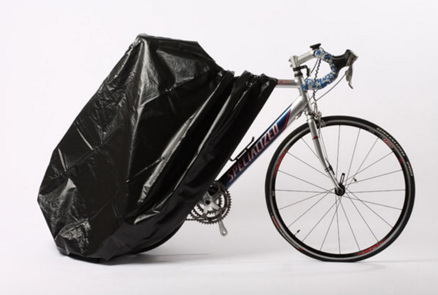
Zerust Rest-Resistant Bike Cover A bicycle’s lifespan can be impacted significant by rust. Your bike will not last nearly as long as it could without the proper protection. Cyclists everywhere can benefit from the Zerust Rust-Resistant Bike Cover. Zerust products eliminate the chemical reactions that cause corrosion. Whether your bicycle is a high-end racing cycle … Continue reading “Bike Cover”

Zerust Tool Box Liner Tools are always susceptible to rust and corrosion; thus, protective measures must be taken to increase their lifespan and reliability. Zerust creates products that defend against rust damage safely and efficiently. The Zerust Tool Box Liner is the best option for protecting your tools from corrosion. Eliminating rust has never been … Continue reading “Tool Box Liner”

Motorcoach Driver Training Courses Are you looking for comprehensive Motorcoach Driver Training Courses? The Motorcoach Safety Training Company has developed a course package that will teach you everything you need to know. With MCSTCO, you can get it right the first time, learning how to drive a motorcoach safely and smoothly. Their motorcoach safety courses … Continue reading “Motorcoach Driver Training Courses”

Zerust Table Saw Rust Prevention Cover If you have any possessions that contain metal, they susceptible to corrosion and rust damage. Getting the longest lifespan out of your belongings requires taking protective measures against corrosion. Zerust’s rust prevention products are the most reliable defense against rust damage. Whether it’s table saws, bicycles, jewelry, tackle, or … Continue reading “Table Saw Rust Prevention Cover”

Copperloy Loading Dock Ramps Freight-loading facilities all over the country depend on their equipment to drive the productivity of their operation. Efficiency hinges on the quality of the equipment at the facility and is one of the most pivotal aspects of any loading dock. Warehouse equipment needs to be reliable, stable, and safe; however, if … Continue reading “Loading Dock Ramps”

Dealing with e Waste When protecting your technology, it is necessary to be conscious of more than just your current devices. Securing your information means you must also consider your older technology, as it could be a security risk. Old, unused technology is called “e Waste.” It is likely that your office has a significant … Continue reading “e Waste | QualityIP”

Northeast Ohio Juvenile Defense Lawyer | Cameron B. Pedro If your child is facing a criminal charge, you need a juvenile defense lawyer that will provide zealous representation to protect your child’s rights. Cameron B. Pedro can guide you through the entire process, providing legal counsel and protecting you family. No one should attempt to … Continue reading “Juvenile Defense Lawyer”
Davis Law Group LLC | Business Attorney Akron Ohio If you want the best business attorney Akron Ohio has to offer, look no further. The Davis Law Group LLC has an experienced team of business lawyers who will work tirelessly to ensure your success. Building a business requires extensive knowledge and bravery; however, creating a … Continue reading “Business Attorney Akron Ohio”

Cameron B. Pedro | OVI / DUI Lawyer Wadsworth Ohio Anyone in Wadsworth that is facing a DUI charge should contact an attorney immediately. When there is a possibility of conviction, you need a lawyer to provide guidance and legal counsel. Cameron B. Pedro, OVI / DUI Lawyer Wadsworth Ohio, has helped many clients defend … Continue reading “OVI / DUI Lawyer Wadsworth Ohio”

Cameron B. Pedro | OVI / DUI Lawyer Medina Ohio If you live in Medina and are facing a DUI charge, you need a OVI / DUI Lawyer in Medina, Ohio, as soon as possible. When you are dealing with the possibility of conviction, an attorney can provide legal guidance; thus, helping you make appropriate … Continue reading “OVI / DUI Lawyer Medina Ohio”

OVI / DUI Lawyer Brunswick Ohio When facing a DUI charge, you need a Brunswick DUI lawyer who can provide you with reliable legal counsel. DUI charges can potentially have substantial, negative effects on your life. Under Ohio law, the court can give out hefty fines, jail time, license suspension, and a vast variety of … Continue reading “OVI / DUI Lawyer Brunswick Ohio”

Copperloy Used Yard Ramps Equipment is one of the most important parts of a warehouse operation. The tools of the trade are a pivotal source for productivity and efficiency, and these aspects depend heavily on the quality of the equipment. Warehouse equipment needs to be functional and safe while also increasing efficiency and maintaining durability. … Continue reading “Used Yard Ramps”

Real Estate Lawyer / Business Lawyer Akron Ohio Both residential and commercial real estate transactions are substantial investments. In real estate transactions, it is paramount to make decisions that will maximize profit while lowering risk. Making appropriate decisions in these situations will lead to making the most of the investment. Davis Law Group LLC has … Continue reading “Real Estate Lawyer / Business Lawyer Akron Ohio”
Copperloy Truck Ramps | Mobile Ramp Efficiency and productivity are two of most important aspects of any type of warehouse or facility. Facilities depend on their efficiency to drive success, and efficiency depends heavily on the quality of the equipment involved. The equipment at your loading dock needs to be safe, functional, and durable to … Continue reading “Mobile Ramps”

Divorce Lawyer Brunswick Ohio | Cameron B. Pedro When family disputes evolve into serious legal issues, a lawyer can provide guidance and will fight to protect your interests of your family. Cameron B. Pedro is a Brunswick, Ohio, divorce lawyer who specializes in a multitude of family law cases. Divorce can be incredibly difficult and … Continue reading “Divorce Lawyer Brunswick Ohio”

Copperloy Loading Equipment | Forklift Ramps A warehouse’s level of productivity hinges on the quality of the equipment employed. Regardless of whether your facility is using forklift ramps or other forms of loading dock equipment, the quality of the tools you use can have significant effects on your operation. Loading dock equipment needs to be … Continue reading “Forklift Ramps”

Child Support Lawyer | Cameron B. Pedro Understanding your child support rights and obligations as well as establishing them can be a difficult task. However, an expert child support lawyer can assist in making the proper decisions for the present and future. This will not only benefit you, but it will also substantially benefit your … Continue reading “Child Support Lawyer OH”
Copperloy Dock Boards The productivity of a warehouse loading operation hinges on the quality of the equipment involved. Whether it’s dock boards or loading ramps, this equipment has substantial effects on how a facility runs. Your equipment needs to be safe, functional, and highly efficient to make the most of the situation. If your equipment … Continue reading “Copperloy Dock Boards”

Child Custody Lawyer | Cameron. B Pedro In the process of a separation, child custody battles can cause great distress. It is entirely reasonable for both parents to want to see their children as much as possible; however, divorce and other domestic disputes can make fair custody agreements difficult to find. When dealing with such … Continue reading “Child Custody Lawyer OH”
Rent a Loading Ramp | Factor Certified Are you searching for a cost-effective, short-term solution for a loading dock operation dilemma? Then, Copperloy has exactly what you need. You can now rent a loading ramp from the collection of Copperloy’s reliable products. They are offering yard ramp rentals that are factory certified from their complete … Continue reading “Rent a Loading Ramp”

Expert Legal Counsel | Lawyer Brunswick Ohio Any legal case you encounter could have significant effects on your life; therefore, when dealing with any legal situation, you need to contact an attorney as soon as possible. Furthermore, you need an attorney that will fight to protect your rights with expert legal representation. One wrong move … Continue reading “Lawyer Brunswick Ohio”

Attorney Wadsworth Ohio | Cameron B. Pedro When facing legal issues, it is important to hire a reliable attorney to defend your rights. Cameron B. Pedro, attorney Wadsworth Ohio, represents citizens in Wadsworth and surrounding areas. Whether criminal or civil, he is capable of providing outstanding legal representation. Any legal situation you come across could … Continue reading “Attorney Wadsworth, Ohio”

Loading Dock Ramps | Copperloy Loading Equipment The quality of loading dock ramps has a significant impact on the productivity of warehouses and other facilities. Ramps need to be safe, functional, and efficient, and if they cannot meet these requirements, they could have a negative impact on the facility’s operation. When forklifts are loading and … Continue reading “Copperloy Dock Ramps”

Reliable Representation | Attorney Brunswick Ohio Any type of legal matter could potentially change your life. Regardless of whether you are facing divorce, bankruptcy or even jail time, it is important to hire representation that will fight to protect your rights. A wrong move in a legal case could lead to serious personal or financial … Continue reading “Attorney Brunswick, Ohio”

Make Loading Easier | Copperloy Portable Ramps Portable Ramps need to be functional, safe, and efficient. If they fail to meet these expectations, they could negatively impact the loading process. Usually, people are loading and unloading from trucks by forklift all day long. Loading ramps need to be capable of handling this workload and more. … Continue reading “Copperloy Portable Ramps”

Safety and Efficiency | Copperloy Loading Ramps When warehouses and other facilities use less-than-reliable loading ramps, it can be a great detriment to their productivity. In an environment where people are loading and unloading all day, the loading ramps involved should be capable of withstanding the workload. Copperloy truck loading ramps can easily handle a … Continue reading “Copperloy Loading Ramps”
Make Loading Easier | Copperloy Aluminum Ramps If a loading ramp is not designed for safety and efficiency, it can have negative consequences for a facility’s productivity. When people are loading and unloading from trucks all day and forklifts are going up and down ramps, the ramps involved need to withstand the workload and then … Continue reading “Copperloy Aluminum Ramps”

QualityIP IT Consulting | Managed IT Services Managed IT Services can be greatly advantageous for any business owner, especially those struggling with technology issues. Maintaining a successful business is hard enough as it is. Issues with company technology exist only as a drain on time and resources. Business owners need to focus their time on … Continue reading “Managed IT Services | QualityIP”
Copperloy Truck Loading Ramps Unsafe and unreliable truck loading ramps can be a substantial detriment to the loading and unloading process. If people are moving heavy cargo in and out of trucks all day, the ramps involved should be able to handle the workload and then some. Copperloy truck loading ramps are more than capable … Continue reading “Truck Loading Ramps”
Copperloy Truck Ramps If a truck ramp is unsafe and unreliable, it can be a great detriment to the efficiency of a loading dock operation. When people are loading and unloading from trucks all day, the truck ramps in use need to be capable of handling the workload. Copperloy manufacturers some of the safest truck … Continue reading “Copperloy Truck Ramps”
QualityIP IT Consulting In today’s business world, hiring a reliable IT consulting firm can be a serious advantage for any company. Competing in today’s business climate is hard enough. Business owners need to focus on making a profit and increasing the customer base; therefore, any company technology needs to be working at its highest possible … Continue reading “QualityIP IT Consulting”

Wuxi Aoweite | Silicone Products China Those looking for quality silicone products in China need look no further. Wuxi Aoweite is the solution for all your silicone product needs. They are more than capable of meeting a wide variety of unique customer demands. In their product line, they offer a myriad of Chinese-manufactured Silicone and … Continue reading “Silicone Products China | Wuxi Aoweite”

Wuxi Aoweite Silicone Co., Ltd | Custom Rubber Products China If you are searching for custom rubber products in China, Wuxi Aoweite is the company you’ve been looking for. Wuxi manufactures their silicone rubber extruded products to meet unique customer demands. They offer a variety of Chinese-manufactured Silicone and Silicone Sponge Extrusion options. Their products … Continue reading “Custom Rubber Products China | Wuxi Aoweite”
Qualiform Inc. Custom Rubber Products If you are looking for reliable custom rubber products, Qualiform is the company you need. Qualiform has incomparable experience in the design and manufacturing of rubber products. They have unparalleled expertise in the custom rubber molding industry and have been providing reliable service and high-quality service for many years. Relative … Continue reading “Custom Rubber Products”

Zerust’s Rust Prevention Products Any possessions made of metal are susceptible to corrosion and rust damage. To give your belongings the longest lifespan possible, taking protective measures is a necessity. Zerust’s Rust Prevention Products are, by far, the best solution for all rust and corrosion issues. Whether it’s your tools, tackle, jewelry, or even your … Continue reading “Rust Prevention | Zerust Products”

The Zerust Tool Box Drawer Liner Any collection of tools is susceptible to the dangers of rust and corrosion; therefore, taking protective measures is necessary for increasing your tools’ longevity. The Zerust Tool Box Drawer Liner is perfect for protecting tools and other metal belongings for rust damage. Zerust can easily protect your belongings from … Continue reading “Tool Box Drawer Liner”

Home Sweet Home Remodeling | Home Remodeling Companies If you are looking for home remodeling companies in Northeast Ohio, you should consider Home Sweet Home Remodeling. They serve the areas of Medina, Fairlawn, Hudson, and many more. When you choose Home Sweet Home, you are choosing one of Ohio’s leading home remodeling companies. They excel … Continue reading “Home Remodeling Companies”

Craven Construction | Church Builders Akron Craven Construction started in 1988 with the mission of providing construction services with superior expertise. They are experts in the area of General Contracting and Construction Management services; therefore, Craven is one of the most reliable church builders in Akron. Craven continues to build their legacy of impeccable service … Continue reading “Church Builders Akron”

Great Beginnings Pediatric Dentistry | Dentist Near Me If you searched “Dentist Near Me” in hopes of finding the best dentist for your child, look no further. Great Beginnings Pediatric Dentistry is exactly what you and your child need. The staff of GBPD works to create an environment that is welcoming and comfortable for children. … Continue reading “Dentist Near Me | GBPD”

Ohio Garage Interiors Garage Flooring If you are looking for garage flooring with both strength and beauty, look no further. Ohio Garage Interiors has a large selection of epoxy coatings for your garage floor. These flooring options will give your garage the upgrade you’ve been searching for. Garages are extremely high-traffic areas; therefore, installing garage … Continue reading “Garage Flooring”

Motorcoach Driver Training Course If you are in need of a Motorcoach Driver Training Course that will teach you everything you need to know, look no further. The Motorcoach Safety Training Company has developed a training course that gets it right the first time. Their course teaches all safety leaders how to set proper safety … Continue reading “Motorcoach Driver Training”
A Brunswick Family Lawyer Who Will Fight For You When family disputes become a serious legal issue, you need a lawyer that will fight to protect you and your family’s interests. Cameron B. Pedro is a Brunswick family lawyer who specializes in many family-related cases. Cases such as divorce, child custody battles, or domestic abuse … Continue reading “Brunswick Family Lawyer | Cameron B. Pedro”

Cameron B. Pedro Will Protect Your Rights | DUI Lawyer Medina If you or a loved one has recently been charged and are in need of a DUI lawyer in Medina, Ohio, Cameron B. Pedro can provide you with legal counsel. DUI convictions can have serious, negative effects on your life. In Ohio, the law … Continue reading “DUI Lawyer Medina | Cameron B. Pedro”

Managed IT Services | QualityIP Tech Maintenance Finding the right Managed IT Services provider can be a significant advantage in the modern business world. To compete in today’s climate, businesses need their computers and other technology to work at the highest possible efficiency. However, maintaining a successful business is tough enough without the worries of … Continue reading “QualityIP’s Managed IT Services and More”

Wenco MEX Rubber Lining Mining operations are required inherently to move copious amounts of various materials. For this process to reach its highest possible efficiency and convenience, mining companies need rubber lining they can rely on to transport the materials. Wenco MEX is a business that specializes in the production high-quality rubber linings as well … Continue reading “Wenco MEX Rubber Lining”

Wenco USA Rubber Lining Any operation in the mining industry has to move endless amounts of material. To reach the desired level of productivity and efficiency, mining companies need to employ reliable rubber linings. Wenco USA is a business that specializes in the production of rubber protective linings and other mining products. The Wenco linings … Continue reading “Wenco USA Rubber Lining”
Progressive Die Stamping | Full-Service Ohio Metal Stamper Progressive Machine Die (PMD) is an Ohio-based, full-service metal stamper, which offers a myriad of reliable services. PMD offers progressive die stamping as well as design and prototyping, stamping, production, in-house tooling and assembly. Furthermore, PMD is one of the few manufacturers in the U.S. that produces … Continue reading “Progressive Die Stamping”

QualityIP’s Managed IT Services Akron Businesses looking for Managed IT Services in Akron should consider the tech experts at QualityIP. To compete in today’s business climate, companies need their technology to work at its highest efficiency. However, maintaining a business and its technology at the same time can be a daunting task for the average … Continue reading “QualityIP Tech Maintenance | Managed IT Services Akron”

QualityIP Tech Experts | Managed IT Services Akron Ohio Akron businesses searching for reliable Managed IT Services should consider the tech experts at QualityIP. Competing in the current business climate is hard enough, and tacking technology maintenance on to the already dense list of responsibilities is stressful to say the least. QualityIP understands that business … Continue reading “QualityIP Managed IT Services Akron Ohio”

Reinventing with Home Sweet Home | Remodeling Contractor Anyone in need of a remodeling contractor in Northeast Ohio should consider Home Sweet Home. This remodeling company serves the areas of Medina, Fairlawn, Hudson and many more. Home Sweet Home can handle virtually any remodeling challenge. Whether it’s bathrooms, kitchens, roofing or even entirely new construction … Continue reading “Home Sweet Home | Remodeling Contractor”

Protect Your Skates | Zerust Skate Covers Rust and corrosion can render even the best ice skate blades unusable. Without proper protection, rust damage can waste copious amounts of money that could easily be saved. Zerust’s Skate Covers can make this problem a thing of the past. With these ice skate blade covers, you will … Continue reading “Rust-Resistant Ice Skate Covers | Zerust Products”

Protect Your Bike from Corrosion | Zerust Bike Storage Bag Rust can drastically shorten the lifespan of a bicycle, and cyclists everywhere could benefit from Zerust’s Bike Storage Bag. With Zerust, rust damage becomes a thing of the past. Zerust stops rust before it can begin, eliminating reactions that cause corrosion. Both commuter bikes and … Continue reading “Rust-Resistant Bike Storage Bag | Zerust Products”

QualityIP Network Services | IT Consulting Maintaining a proper system for your business technology requires an experienced IT consulting firm. QualityIP has extensive experience in helping businesses reach their best possible security situation. Building a successful business is difficult enough; therefore, QualityIP works tirelessly to help their clients improve security, bolstering efficiency and productivity. They … Continue reading “Trustworthy IT Consulting | Network Security Ohio”

QualityIP Network Security | Northeast Ohio IT Companies Technological security is a pressing issue in today’s business world, so hiring the right IT companies is paramount. QualityIP is a leading provider of IT services in Northeast Ohio, having helped companies significantly enhance security and efficiency. When working with QualityIP, they take care of all your … Continue reading “Northeast Ohio IT Companies | QualityIP Tech Services”

Reliable Technology Experts | QualityIP IT Services In today’s business world, technology is a necessity, but keeping your tech secure and up-to-date can be challenge. To ensure consistent success with business technology, you need an IT services company that you can trust. QualityIP is one of the leading IT companies in Akron and Cleveland as … Continue reading “QualityIP Network Security and Other IT Services”

Precision Plastic Machining | Plastic Machining Company If you are looking for a plastic machining company in Ohio, Jaco is the solution for you. Jaco is one of the leading companies that specializes in precision plastic machining. With their state-of-the-art CNC machining centers, they are capable of easily meeting the current demands of the industry. … Continue reading “Jaco Products | Plastic Machining Company”
Jaco Plastic Products and Services | Plastic Companies in Ohio Finding plastic companies in Ohio that are reliable and can provide you with the services you need can be difficult. At Jaco, however, they can help you with any project. With high-quality parts and state-of-the-art technology, Jaco can get the job done as quickly as … Continue reading “Plastic Companies in Ohio | Jaco Products”

Custom Plastic Injection Molding Service Jaco Products offers plastic injection molding service for thermoplastic materials up to 29 ounces. They are experts in custom injection molding for complex parts, maintaining competitive prices in the industry. With their state-of-the-art injection mold technology, Jaco has built a reputation for quality. Jaco’s staff is highly experienced in all … Continue reading “Plastic Injection Molding Service | Jaco Products”
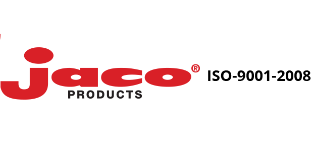
Jaco’s Machined Delrin Machined Delrin is applicable in a large variety of situations. During their fifty years in the industry, Jaco has a long history working with Delrin plastic. They understand the benefits of Delrin, allowing them to make the most of this durable material. This quality material can bring your custom plastic products to … Continue reading “Machined Delrin | Jaco Plastic Products”

Jaco’s Plastic Machine Shop The Jaco Plastic Machine Shop is ready for almost any job. They can provide plastic parts at an outstanding quality for a reasonable price, and they also work to produce them as quickly as possible. With their utilization of high-quality materials and state-of-the-art technology, Jaco’s plastic machine shop is incredibly consistent. … Continue reading “Jaco Products | Plastic Machine Shop”
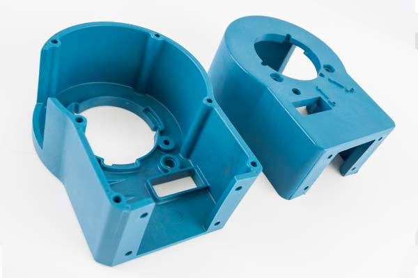
A Leader Among Plastic Manufacturing Companies | Jaco Products In order to provide truly high-quality plastic products, plastic manufacturing companies need to put their customers first. Jaco works with their clients to make the design and manufacturing products a much more simple and efficient process. Offering a plethora of services, Jaco can get you the … Continue reading “Jaco Products | Plastic Manufacturing Companies”

Loading Dock Forklift Ramps | Copperloy Products Without a reliable loading ramp, the processes of loading and unloading can become unnecessarily strenuous. A successful loading dock operation needs forklift ramps that are durable, safe, and reliable. Copperloy is a top company in the design and manufacturing of extremely reliable forklift ramps. With Copperloy ramps, productivity … Continue reading “Hydraulic Forklift Ramps | Copperloy Products”

Hydraulic Forklift Ramp | Copperloy Products When a forklift ramp is unreliable and unsafe, it can be a significant problem for a loading dock operation. If people are going to be loading and unloading all day, the yard ramps also need to be able to handle the workload. Copperloy is one of the leading manufacturers … Continue reading “Copperloy Hydraulic Forklift Ramp”
Copperloy Hydraulic Portable Loading Ramp For loading docks to reach maximum efficiency, they need yard ramps that provide unparalleled strength and safety. Copperloy specializes in the design and manufacturing of loading dock ramps that drastically increase safety and productivity. The one-cylinder design of their portable loading ramp applies much less pressure than two-cylinder ramps. Copperloy … Continue reading “Copperloy Loading Dock Ramps | Portable Loading Ramp”

Wenco MEX Rubber Products | Rubber Linings Mexico The mining industry has many uses for high-quality hard rubber. However, protective rubber linings are some of the most useful. Wenco MEX is a company that designs and engineers hard rubber linings for the mining industry. They design their rubber linings with silica-reinforced rubber, which protects them … Continue reading “Wenco MEX Protective Rubber Products | Rubber Linings Mexico”

Wenco USA Protective Rubber | Rubber Linings USA Businesses in the mining industry can benefit substantially from high quality rubber linings. Wenco USA is a business that specializes in the engineering of rubber linings and other mining products. Their rubber linings are one of their most prominent products. These protective rubber linings contain silica-reinforced rubber, … Continue reading “Wenco USA Rubber Products | Rubber Linings USA”

Protect Your Skates with Zerust | Ice Skate Blade Covers Any figure skater and hockey player knows that keeping skates clean is paramount for safety and comfort. However, rust and corrosion can be incredibly destructive without anyone realizing before it’s too late. Zerust, on the other hand, can protect against any damaging corrosion. The Ice … Continue reading “Ice Skate Blade Covers | Zerust Anti-Corrosion Products”

Shield Your Tools from Rust | Tool Box Drawer Liner Any owner of a large collection of tools needs to protect them from the dangers of corrosion. If you are looking for a quality product to shield your tools from rust, the Zerust Tool Box Drawer Liner will do the job. Zerust can handle most … Continue reading “Zerust Anti-Corrosion Products | Tool Box Drawer Liner”

Ready When You Need It | Dependalite LED Flashlight It seems that whenever someone needs a flashlight the batteries are dead. There is rarely a time when an average flashlight can be truly reliable when it should be. However, the Dependalite LED Flashlight eliminates this all-too-familiar problem. The team at Dependalite has created power-saving technology … Continue reading “The Dependalite LED Flashlight | Long-Lasting Flashlight”

Protect Your Business with QualityIP | IT Companies Akron Technology and security are pivotal aspects in every successful business. However, most businesses need to spend much of their time building a clientele and creating profit. Maintaining security can become a struggle that can do great damage to smaller businesses. Therefore, finding the right IT companies … Continue reading “QualityIP Network Protection | IT Companies Akron”

QualityIP Technology Experts | IT Companies Akron Today, we live in a society where technology permeates every aspect of everyday life. Therefore, keeping your technology secure becomes more important as time goes on. QualityIP is a top provider of IT services in Akron, Cleveland, and other Northeast Ohio areas. Whether it is your personal or … Continue reading “QualityIP Network Security and More | IT Companies Akron”

Reliable Safety Wire Products If you are searching for a reliable safety wire product or any other wire-based product, check out Malin Co. safety wire. This company is a leading source of high-quality wire products. Whether it is dental wire, medical wire, or fishing wire, Malin Co. has the resources to give you the exact … Continue reading “Malin Co. Wire Products | Safety Wire / Lock Wire”

No Place Like Home | Remodeling Contractors Those looking for remodeling contractors in Northeast Ohio need not look further. Home Sweet Home is a remodeling company serving the Fairlawn, Medina, and Hudson areas among many others. Whether it’s kitchens, bathrooms, roofing/siding, or even brand new construction projects, Home Sweet Home has the team for the … Continue reading “Home Sweet Home Remodeling Contractors”

The “Exterminators Near Me” That You Need

Rubber Protective Linings | Wenco Mining Products The use of rubber protective linings at a mining site is essential for productivity. Wenco MEX specializes in the design and manufacturing of rubber linings and many other mining products. They offer a large selection of mining tools; however, Wenguard rubber protective linings are a highly requested item. … Continue reading “Rubber Protective Linings | Wenco MEX”

Wenco Pre-Cured Rubber Linings If your mining site needs durable, pre-cured rubber linings, Wenco MEX offers a reliable product. Wenco MEX focuses on the manufacturing and design of protective rubber linings and many other mining products. They have a large selection of different tools, and Wenguard is among the most requested. Wenguard pre-cured rubber linings employ … Continue reading “Wenco MEX | Pre-Cured Rubber Linings”

Wenguard Protective Rubber Lining Protective rubber lining is a necessary tool for any successful mining operation. Finding the rubber lining that fits your specific needs can be taxing, but Wenco MEX can make the process easy and affordable. Wenco is a business that specializes in designing a large variety of quality mining products. The Wenguard … Continue reading “Protective Rubber Lining | Wenco MEX Mining Products”
Copperloy Yard Ramps Copperloy offers yard ramps with incomparable strength and efficiency especially in when it comes to yard ramps. The one-cylinder design applies significantly less pressure than two-cylinder ramps. This provides improved stability, faster raising speed and generally easier operation. Copperloy designs their ramps with the hydraulic pump on the outside of the ramp for easy … Continue reading “Yard Ramps | Copperloy Loading Dock Products”

Wenguard Rubber Protective Linings Rubber protective linings are an invaluable tool at any mining site. Wenco USA is one of the top companies in the production of these protective items. For many years, Wenco USA has focused on the design and manufacturing of rubber protective linings and other mining products of similar uses. They have … Continue reading “Wenco USA Mining Products | Rubber Protective Linings”

Wenguard Pre-Cured Rubber Linings If your mining operation needs pre-cured rubber linings, Wenco USA is your best bet for consistent, high-quality products. Wenco USA has a reputation for their focus on the design and manufacturing of rubber linings and similar mining products. They offer a large variety of products, and the Wenguard Rubber Lining is … Continue reading “Pre-Cured Rubber Linings | Wenco USA”

Wenguard Protective Rubber Lining The mining industry requires the use of the best protective rubber lining products. Wenco USA is a business that specializes in the design and manufacturing of high-quality products in the mining industry. Their Wenguard Rubber Lining is one of the many products they offer. This protective rubber lining contains silica-reinforced rubber and protects … Continue reading “Wenco USA Products | Protective Rubber Lining”

Quality IP Security Services | IT Services Akron Building a successful business is stressful. It is challenging to consistently bring in new clients while also competing with rivaling prices and customer service. Therefore, it is important avoid security breaches as much as possible. Quality IP provides IT services in Akron as well as security that … Continue reading “IT Services Akron | Quality IP”

Ohio’s Top IT Company | IT Services Akron Ohio Quality IP began its history of IT Services in Akron, Ohio, in 2003. Originally, their main specialization was the Voice over IP service (VoIP), a cloud-based telephone service with significant versatility relative to older telephone services. With their humble yet loyal customer base of family and friends, this is … Continue reading “Quality IP | IT Services Akron Ohio”

The Defense You Need | Criminal Defense Lawyer Medina OH When you are a charged with a crime, you need in a criminal defense lawyer who will fight for you. You deserve to understand and defend yourself against charges you have received, and Cameron B. Pedro is the Medina lawyer you can depend on. Legal … Continue reading “Criminal Defense Lawyer Medina OH | Cameron B. Pedro”
Cameron B. Pedro | Family Law Attorney Medina Ohio Family issues are complicated and stressful, and those in trouble who need a family law attorney in Medina, Ohio should contact Cameron Pedro. Whether it’s disputes over custody, divorce or domestic abuse, Pedro can help you. He will give you the legal counsel to protect you … Continue reading “Family Law Attorney Medina Ohio | Cameron B. Pedro”

Qualiform Quality | Custom Rubber Grommets Finding the perfect design for custom rubber grommets can be a difficult task; however, Qualiform has the tools and knowledge to help. Qualiform is a rubber products manufacturer that offers professional customer service and quality products. Qualiform has a significant level of experience in producing custom rubber grommets unlike other rubber manufacturers. … Continue reading “Custom Rubber Grommets | Qualiform Incorporated”
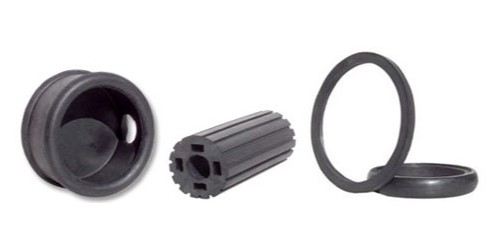
Experts in Custom Rubber Products Anyone in need of custom rubber products should contact Qualiform. This is an experienced rubber products manufacturer that offers reliable service and high quality products. Qualiform has many years of experience in producing custom rubber products unlike many other rubber manufacturers. They offer services such as rubber compression molding, transfer molding, and … Continue reading “Qualiform, Inc. | Custom Rubber Products”

Ride without Rust | Rust Resistant Bike Cover Whether it is new or old, you should protect your bike with a rust-resistant bike cover. Worrying about rust and corrosion on your bike is something you should not have on your shoulders, and Zerust will throw stress out the door. Commuter bikes and high-end racing cycles … Continue reading “Zerust Anti-Rust Technology | Rust Resistant Bike Cover”

Protect Your Tools | Zerust Tool Box Drawer Liner You or anyone else with a large collection of tools need Zerust’s anti-rust tool box drawer liner. Zerust will solve nearly all rust-related problems. This anti-rust technology will shield your tools and tackle from corrosion and rust. This rust prevention technology also works well with all metal items including … Continue reading “Zerust Rust Prevention Products | Tool Box Drawer Liner”

Defend Against Corrosion | Zerust Tool Box Liner If you want to keep your tools from rusting, you need Zerust’s anti-rust tool box liner. Zerust is the solution to all rust-related problems. This anti-rust technology will shield your metal tools from corrosion and rust. This rust prevention technology also functions exceedingly well with all metal valuables. Items … Continue reading “Zerust Anti-Rust Products | Tool Box Liner”

De-Rust with Zerust | Air Conditioner Cover Zerust’s air conditioner cover is one of the many products that utilizes the Zerust anti-rust technology. This technology protects any metal item from harmful rust and corrosion. Zerust products are safe, easy-to-use and long-lasting. Zerust also works with a large variety of metal objects. This includes items made with copper, … Continue reading “Zerust Anti-Rust Products | Air Conditioner Cover”
Protect Valuables with Zerust | Rust Prevention Rust prevention is important for the lifespan of any of you metal possessions. That’s why Zerust exists as the ultimate anti-rust solution to shield metal from corrosion and rust. This rust prevention technology functions well with all metal valuables, including tools, automotive parts, firearms and even fine jewelry. Zerust uses a … Continue reading “Reliable Rust Prevention Technology | Zerust Products”